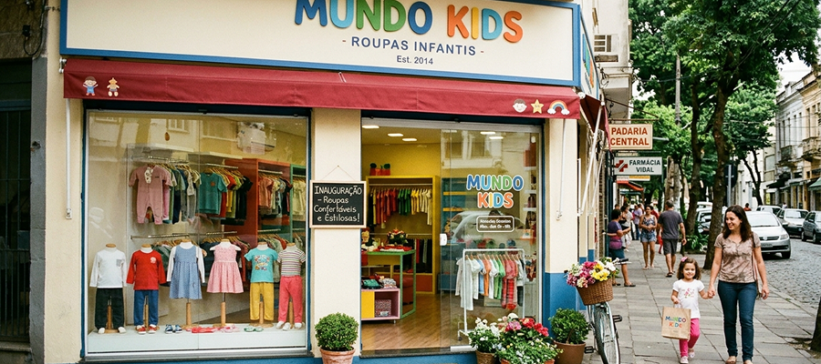
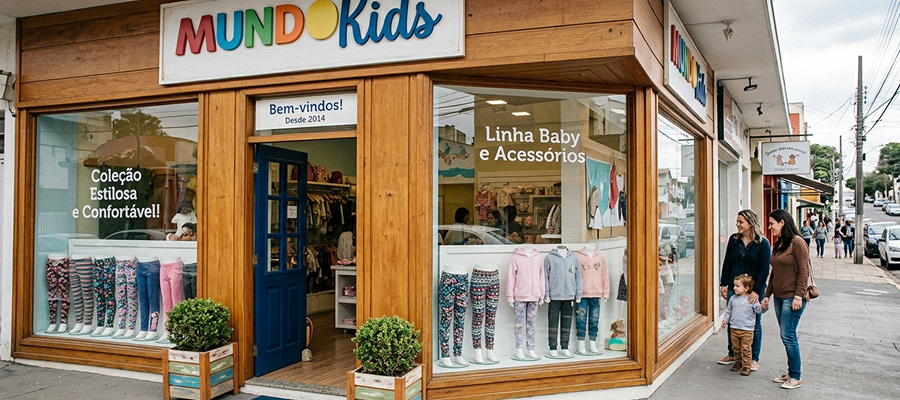
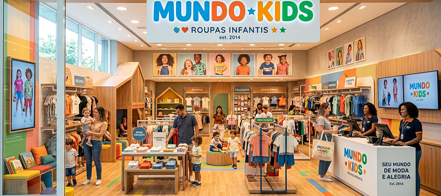

Nossa História
A primeira unidade da Mundo Kids abriu suas portas com uma proposta clara: ser mais do que uma loja de roupas, um ambiente acolhedor para a família. Desde os primeiros dias, o diferencial esteve na seleção rigorosa de parceiros. Trabalhando exclusivamente com marcas de qualidade reconhecida, cada peça passou a ser escolhida a dedo.

A marca consolidou seu papel de especialista em tendências infantis. Em vez de apenas reproduzir a moda adulta em tamanho menor, a Mundo Kids trouxe coleções coloridas, lúdicas e alinhadas com o estilo de vida dinâmico das crianças contemporâneas.

Hoje, a Mundo Kids celebra anos de história como um porto seguro para mães, pais, avós e dancinhas que buscam o presente perfeito. A marca segue expandindo suas linhas, investindo em moda sustentável e buscando novas tecnologias em tecidos que facilitem a rotina dos pais e proporcionem liberdade total aos pequenos.
